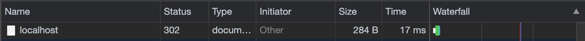

Level 7 - Milestone 3
Milestone 3 - Documenting and Accessing Our Code with Swagger
This milestone introduces Swagger, or more specifically, Spring Fox. Spring Fox is an
implementation
of the Swagger specification for Spring. In practice, the two terms can be used interchangeably.
With the addition of the Swagger UI dependency, our application will automatically create a nice
web page that can be used not only to document exactly what our application does, but also allow
us
to very easily execute requests and manually test our application.
Before completion of this milestone, students will:
- Understand the necessity and use of Swagger
- Understand the purpose of a Controller class
- Add a HomeController class to redirect to the Swagger UI
- Understand and properly implement HTTP response codes in the HomeController
Adding a Swagger config file
While Swagger handles much of the heavy-lifting for us, we need to provide it with a little bit of information about our application. First lets create a "config" folder at the base of our project source code (e.g. org.jointheleague.api.level7.cheetah). The name of this folder isn't especially important, but "config" is a good choice. Inside of this config package, create a class called "ApiDocConfig.java". Then, you can copy and paste the code below, or download the file here: ApiDocConfig.java. Make sure to change the relevant description fields to fit your application. You can make these changes before supplying the code to students:
package org.jointheleague.level7.cheetah.config;
import org.springframework.context.annotation.Bean;
import org.springframework.context.annotation.Configuration;
import springfox.documentation.builders.PathSelectors;
import springfox.documentation.builders.RequestHandlerSelectors;
import springfox.documentation.service.ApiInfo;
import springfox.documentation.service.Contact;
import springfox.documentation.spi.DocumentationType;
import springfox.documentation.spring.web.plugins.Docket;
import springfox.documentation.swagger2.annotations.EnableSwagger2;
import java.util.Collections;
@Configuration
@EnableSwagger2
public class ApiDocConfig {
private ApiInfo apiInfo() {
return new ApiInfo(
"Level 7 Cheetah Search",
"League of Amazing Programmers Level 7 Cheetah Search",
"1.0.0",
null,
new Contact("Matt Freedman", "www.jointheleague.org", "matt.freedman@jointheleague.org"),
null, null, Collections.emptyList());
}
@Bean
public Docket api() {
return new Docket(DocumentationType.SWAGGER_2)
.useDefaultResponseMessages(false)
.select()
.apis(RequestHandlerSelectors.any())
.paths(PathSelectors.any())
.build()
.apiInfo(apiInfo());
}
}
Viewing the Swagger UI
In the last section, we added the required Swagger dependencies to our build.gradle file. Lets see that in action:
- Run the application
- In a web browser, navigate to localhost:5000/swagger-ui.html
- The application isn't running
- The code inserted into the application.yml file in the previous section is incorrectly setting the port number
Improving Access to our Swagger UI
We will be visiting this page a lot during the course of this project in order to test our code. In addition, having this Swagger UI easily available to users of our application will allow them to understand what our application does. To facilitate access to this page, we will redirect users that visit the base URL of our application to our Swagger page. In short, when users visit localhost:5000, they will be redirected to localhost:5000/swagger-ui.html. The remaining sections of this milestone will allow us to achieve that goal
Creating the Presentation Package
First things first, let's create somewhere for all of our Controller classes to live. In compliance with the 3-tier architecture that was previously discussed, create a package called "presentation" at the same level as the config package (e.g. org.jointheleague.api.level7.cheetah).
Creating the Home Controller
The classes inside of our presentation package are known as "controllers". The purpose of these classes is to simply map request URLs to methods that should be executed when the specified request is received. In this case, we want to creating a mapping for the base URL, which is simply "/". While you should step through the creation of the class with students, the class in its entirety will look like this:
package org.jointheleague.level7.cheetah.presentation;
import org.springframework.http.HttpStatus;
import org.springframework.stereotype.Controller;
import org.springframework.web.bind.annotation.CrossOrigin;
import org.springframework.web.bind.annotation.GetMapping;
@Controller
public class HomeController {
@GetMapping("/")
public String home(){
return "redirect:swagger-ui.html";
}
}
A few notes on the annotations:
-
@Controller
- Marks this class as a Controller
- This annotation is a specialized version of the @Component annotation.
- The difference between @Controller and @Component is purely cosmetic. By looking at this annotation, we immediately know that this class is a controller
- The purpose of the underlying @Component annotation is very important: it enables this class to be autodetected through class path scanning. What this means for us is that Spring will recognize this class as a component, and any class that implements it will automatically receive an instance of this class. Nowhere in our program will we say "new HomeController()", Spring handles that for us!
-
@GetMapping("/")
-
Method-level annotation that specifies two things:
- This HTTP verb/method for this method is "GET"
- The URL which maps to this method is "/"
-
Method-level annotation that specifies two things:
Test that the Redirect Works
At this point, if you rerun the application, you should be able to go to localhost:5000 and see it redirect to our Swagger page at localhost:5000/swagger-ui.html.
Improving our Response Code
Open the javascript console in your browser, and go to the "network" tab. Here we can see
exactly
what requests were made when we visit a web page. If you again go to
localhost:5000, we will see something that can be improved
upon.
At the top of the network window, you should see a row that looks like this:

If we look up what a status code
of 302 means,
you'll find that it corresponds to "Found", but that the resource resides temporarily under a
different URI.
This is inaccurate, as we will be permanently redirecting requests to the base URL, to our
Swagger page.
This status code is a very important piece of information. It allows us to very succinctly
provide the user
with information about the status of their request, and we should do our best to provide
accurate information.
Luckily Spring makes updating this information very easy. Back in the HomeController class,
add another annotation about the home() method:
@ResponseStatus(HttpStatus.MOVED_PERMANENTLY)
Now if you rerun the application and navigate to localhost:5000 again, you should see that the status code is returned as "301", which represents that the resource is premanently moved.
Summary of Code Changes for this Milestone
-
Cheetah-Search
- src
- main
- java
- org.jointheleague.level7.cheetah
- config
- presentation
- resources
- application.yml
- build.gradle